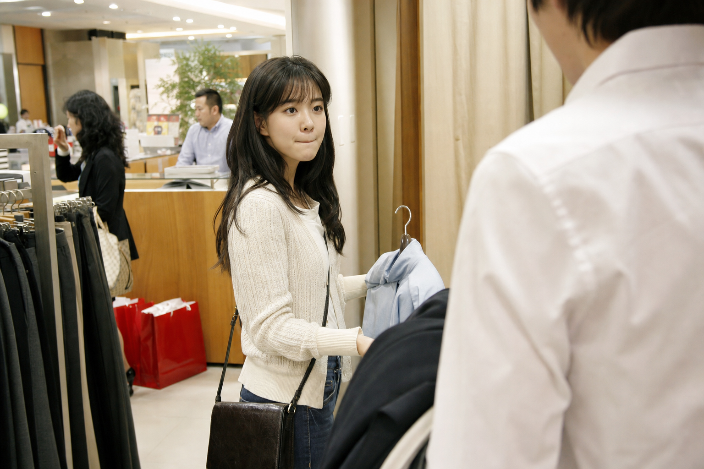

ep.012 네 옷은 내가 고른다
김초연은 조수석에 앉자마자 안전벨트를 붙잡고 말했다.
[김초연] "차 냄새 난다."
[김용식] "새 차니까."
[김초연] "자랑하지 마."
[김용식] "아직 시동도 안 걸었는데."
[김초연] "숨 쉬는 게 자랑이야."
김용식은 웃으며 시동을 걸었다. 김초연은 창밖보다 차 안을 더 많이 봤다. 손끝으로 도어 손잡이를 만지고, 가죽 시트에 등을 붙였다가 바로 떨어졌다.
[김초연] "비싸?"
[김용식] "적당히."
[김초연] "적당히가 얼마인데?"
[김용식] "네가 욕할 만큼."
[김초연] "그럼 엄청 비싸네."
정답이었다.
김용식은 수원 방향으로 핸들을 틀었다. 바로 집까지 데려다줄 수도 있었지만, 그렇게 빨리 내려주고 싶지 않았다.
그때 김초연이 먼저 말했다.
[김초연] "야. 너 옷 사야겠다."
[김용식] "갑자기?"
[김초연] "차는 BMW인데 옷은 입학식 때 그 니트 계속 입을 거야?"
[김용식] "이거 편한데."
[김초연] "편한 거랑 멋없는 건 달라."
너무 정확해서 반박할 수 없었다.
결국 차는 수원 집이 아니라 죽전 근처 쇼핑몰로 향했다. 김초연은 매장 앞에서 팔짱을 끼고 김용식을 훑었다.
[김초연] "너 키랑 어깨는 괜찮은데 왜 그렇게 아저씨처럼 입어?"
[김용식] "내 안에 아저씨가 있어서."
[김초연] "헛소리하지 말고 들어가."
그녀는 자연스럽게 앞장섰다. 김용식은 그 뒤를 따라가며 생각했다.
이건 데이트인가?
물어보면 분명히 아니라고 할 것이다. 네가 너무 못 입어서 구제하러 온 거라고.
그런데 김초연은 셔츠를 고를 때마다 자기 취향을 숨기지 않았다.
[김초연] "이거 입어 봐."
[김용식] "흰 셔츠?"
[김초연] "응. 너 검은 거만 입으면 좀 음침해."
[김용식] "상처받았다."
[김초연] "상처받을 시간에 탈의실."
김용식은 셔츠와 얇은 재킷, 청바지를 들고 탈의실로 들어갔다. 거울 앞에는 차 키를 들고 주차장에 서도 이상하지 않은 남자가 있었다.
문을 열자 김초연이 고개를 들었다.
눈이 반 박자 멈췄다.
그 반 박자면 충분했다.

[김용식] "어때?"
[김초연] "음."
[김용식] "음?"
[김초연] "봐줄 만하네."
[김용식] "그게 칭찬이야?"
[김초연] "내가 너한테 잘생겼다고 하면 네가 더 재수 없어질 거 아니야."
김용식은 웃었다.
이미 충분히 재수 없어지고 있었다.
계산대에서 가격이 찍혔다. 셔츠 두 벌, 재킷 하나, 청바지 하나, 신발 하나. 합계 1,286,000원.
김초연의 눈이 커졌다.
[김초연] "야. 잠깐만. 여기 원래 이렇게 비싸?"
[김용식] "괜찮아."
[김초연] "뭐가 괜찮아. 미쳤어?"
[김용식] "필요한 거잖아."
[김초연] "필요한 거랑 백만 원 넘는 건 다르지!"
김용식은 카드를 내밀었다. 영수증이 길게 나왔다. 그 순간 김초연의 얼굴이 조금 굳었다. 허세는 보는 사람에게 꼭 같은 맛이 아니다.
[김용식] "다음엔 네가 가격 보고 골라."
[김초연] "다음?"
[김용식] "응."
김초연은 영수증 끝을 손가락으로 톡 쳤다.
[김초연] "너 나랑 또 옷 사러 오게?"
[김용식] "싫어?"
김초연은 옆 매장 유리창에 비친 둘을 봤다. 새 셔츠를 입은 김용식, 쇼핑백을 든 자기. 처음보다 가까웠다.
[김초연] "싫다고는 안 했어."
저녁은 돈가스였다. 식사비 28,000원. 카페 14,000원. 주차비 6,000원. 김용식은 머릿속으로 더했다.
옷값까지 1,334,000원.
돈은 여전히 많았다. 그래도 숫자를 놓치면 안 된다.
수원 골목에 도착했을 때, 김초연은 집 앞보다 조금 떨어진 곳에서 세워 달라고 했다.
[김용식] "왜?"
[김초연] "우리 엄마가 보면 귀찮아."
비슷했다. 김용식은 가족에게 차를 숨기고, 김초연은 가족에게 남자를 숨긴다.
차를 세우자 김초연은 안전벨트를 풀지 않고 잠깐 앉아 있었다.
[김초연] "오늘 고마웠어."
[김용식] "옷 골라준 건 너잖아."
[김초연] "차 태워줬잖아."
[김용식] "또 태워줄게."
말이 너무 자연스럽게 나왔다.
김초연은 그 말을 들은 뒤에야 안전벨트를 풀었다.
그녀는 문을 열고 내렸다가, 고개만 다시 넣었다.
[김초연] "근데 너 오늘 산 옷, 내일 입고 와."
[김용식] "검사야?"
[김초연] "응."
문이 닫혔다.
김용식은 혼자 웃었다.
검사받는 사이. 나쁘지 않았다. 아니, 너무 좋았다. 그래서 더 위험했다.